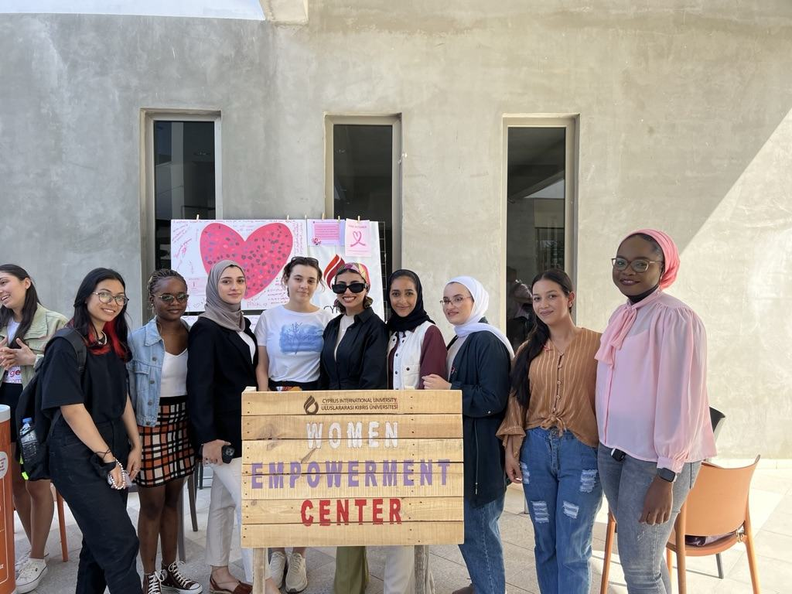

Researcher · Advocate · Community builder
Making space for voices that deserve to be heard.
I’m Dr. Hauwa Bashir Muhammad. Since 2018, I have brought research, communication and community together to advance women’s empowerment.

Based in Lefkoşa, North Cyprus
45+young Afghan women enrolled to keep studying, 2021–22
500+students at our walk against gender-based violence, 2022
30+international female students served a year
25+young women into STEM programmes on scholarships
467news articles coded for my PhD
Selected work
Selected projects
- 2021–2022
Education for young Afghan women
After the Taliban took over Afghanistan, we enrolled more than 45 young women at CIU so they could keep studying.
- Dec 2022
Orange the World: a silent walk against gender-based violence
More than 500 students in orange, mouths covered, for the 16 Days of Activism.
- Oct–Nov 2022
Go Green with Feminine Hygiene
A week on campus breaking the silence around periods.
- 2022
Women in STEM
Scholarships, workshop days and an Instagram Live with women engineers.
- Jul–Aug 2023
Taking the centre to Nigeria
Career counselling and Women in Technology seminars in Kano and Abuja.
- May 2024
TEDxCIU: “Unlocking Empowerment: Rewriting the Foundation for All”
On equity, intersectionality and the Triangle of Empowerment.
- 2019–2026
Whose voices make the news in a health crisis
My PhD content analysis of Nigerian newspaper coverage of COVID-19.
Silence has never protected a woman.